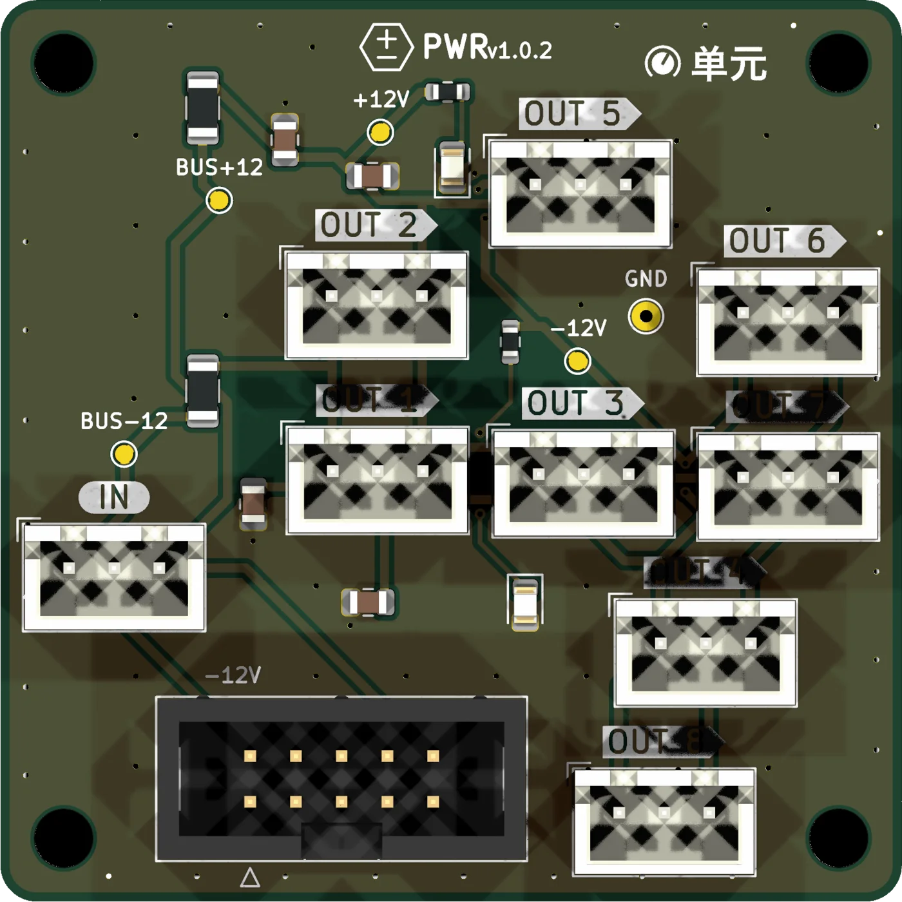
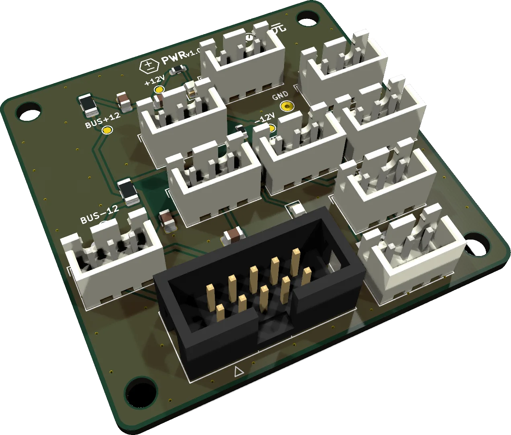
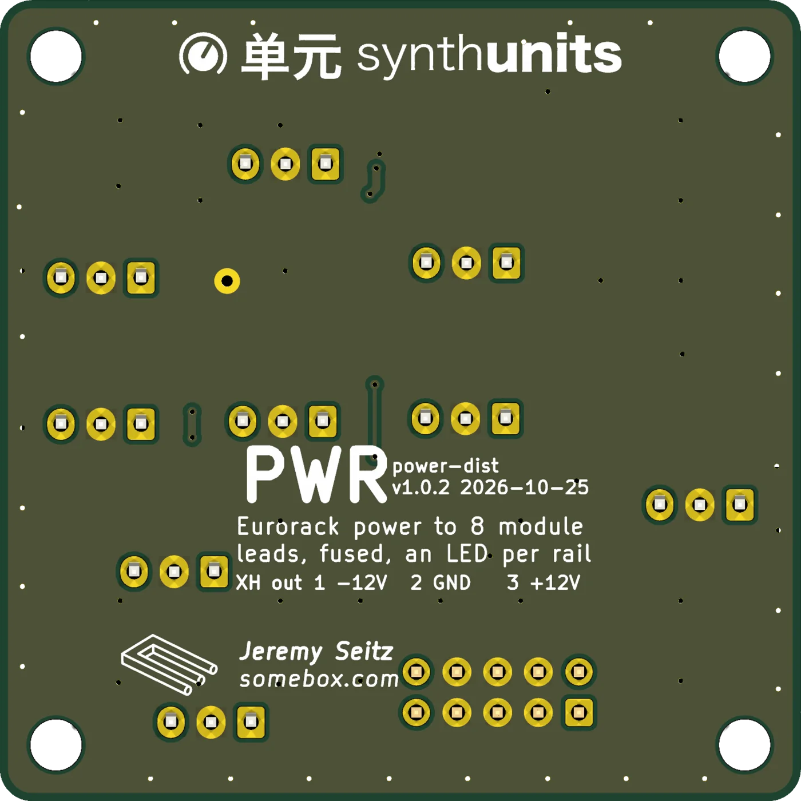
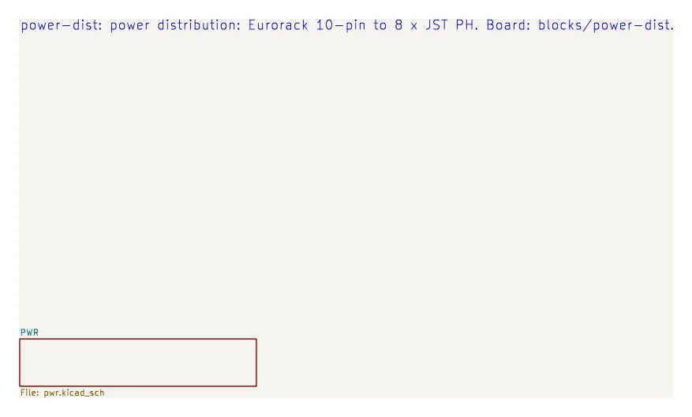
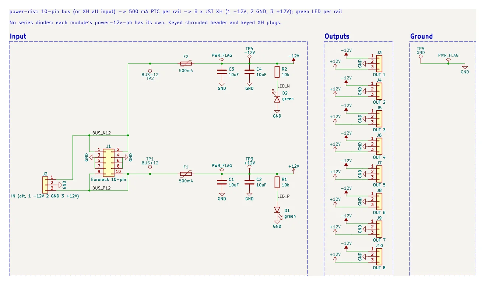

Power hub: one Eurorack ribbon to eight module leads
Takes a Eurorack 10-pin ribbon and gives eight keyed 3-pin leads to the modules, with a resettable fuse and an LED on each rail.
The power hub for the minimodules. One Eurorack 10-pin ribbon comes in, and eight 3-pin JST XH leads go out, one to each module. That way a module takes a small keyed lead instead of carrying its own ribbon header, which keeps the module boards small. The power leads are XH rather than the PH used for the controls, so a power lead can't go into a pot or link connector by mistake.
Each rail has a 500 mA resettable fuse, for a short anywhere downstream, a green LED and two 10 µF capacitors. There are no series diodes here: each module has its own Schottky diode on each rail, so a lead with its rails swapped does no harm, and the rails drop one diode only. A second 3-pin input, in parallel with the ribbon, takes a supply with an XH output, such as the USB-C supply.
I haven't built it yet.
- Status
- In the first test order, being placed
- Version
- v1.0.2 (2026-10-25)
- Board
- 50 × 50 mm, 2 layers
- First order
- 5 boards, 2 assembled by the fab
- Rough price
- about $5–10 (how)
- Progress
- follow its tracking issue



What it does
- Input: a shrouded 2 × 5 Eurorack box header (red stripe at pin 1, −12 V, marked on the board), or a 3-pin JST XH in parallel with it.
- Outputs: eight 3-pin JST XH, top entry: 1 −12 V, 2 GND, 3 +12 V, the same pinout as every module's power connector.
- ±12 V only; no 5 V.
- A resettable fuse per rail: 500 mA hold, about 1 A trip, 33 V.
- 2 × 10 µF and a green LED (about 1 mA) per rail.
- Test pads before and after each fuse, and a through-hole ground pad for a scope clip.
- Designed for nine module boards drawing roughly 100 to 120 mA a rail together (the blocks' estimates, not measured).
- 50 × 50 mm, two layers, four M3 holes.
Wiring and setup
- The ribbon from a Eurorack power supply or bus board, red stripe to −12 V.
- Or the USB-C supply on the 3-pin alternative input. Use one input at a time.
- A straight-through 3-pin XH lead to each module, pin 1 to pin 1.
- Plug the leads in before switching the supply on, never into a live supply.
- If BUS+12 or BUS−12 is live but the pad after its fuse reads 0 V, that fuse has tripped.
Limits and open questions
- Not built yet.
- Eight outputs: a ninth module needs a second hub or a split lead.
- The modules' diodes block a lead with swapped rails, but not a hand-made lead with ground on a rail pin: check each lead with a meter.
- A ribbon reversed at the supply end puts reverse voltage on the hub's LEDs; their resistors limit it to about 1.2 mA.
- Plugging a lead into a live supply overshoots the rail for a moment; plug in first, then switch on.
Development notes
- Power first went on 3-pin PH leads like the controls. I moved it to XH so a power lead can't be mixed up with a pot lead, where its −12 V would short a rail through the pot.
- A review before the first order checked the ribbon pinout, the fuse ratings and the LEDs' polarity, and found them right.
- The test rig's boards take their power from it as well.
Schematic
The schematic as drawn, with each chip named by its function rather than its part number. The design isn't open source yet, so there are no files to download.




Would you use a PWR? A thumbs-up on its tracking issue is how I count interest, and you can subscribe there to follow its bring-up. Questions and ideas go to the discussions.